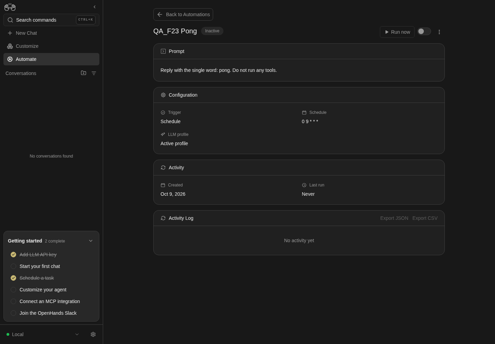

How to get to it
- Dashboard (
/automations, F21): click a card's heading, a list row link, or the kebab Automation actions → View; a sparkline bar opens/automations/<id>?run=<runId>(F21.sparkline-deeplink). - Direct URL
/automations/<id>and/automations/<id>?run=<runId>. Get<id>fromcontrol-openhands browser urlafter opening a card, or fromcontrol-openhands api GET /api/automation/v1; get<runId>fromcontrol-openhands api GET /api/automation/v1/<id>/runs. - Edit automation: the detail kebab Edit (exercised here); the dashboard kebab Edit opens the same dialog (F21.edit).
- Browser Back from a run's conversation returns to the detail page.
- The detail page has no command-menu entry and no keyboard shortcut.
Before you start
Start with the common launch and health checks, then follow this family’s preconditions in order. Recipes share the fixtures and state named below.
Preconditions:
- Baseline state (launched, doctored,
onboard --skipdone) and an active LLM profile for the runs:control-openhands llm preset deepseek(--api-key-file <file>when the key is in a file); the edit recipes also expectdeepseek-proin the LLM profile list. - No
QA_F23automations and no Daily news digest exist (control-openhands api GET /api/automation/v1). - Arrange three fixtures through the API (arrange only; F22 owns creating automations in the UI). Each prints the new automation in
body(body.idis<id>):control-openhands api POST /api/automation/v1/preset/prompt --write --data '{"name":"QA_F23 Pong","prompt":"Reply with the single word: pong. Do not run any tools.","trigger":{"type":"cron","schedule":"0 9 * * *","timezone":"UTC"},"enabled":false}',control-openhands api POST /api/automation/v1/preset/prompt --write --data '{"name":"QA_F23 Fail","prompt":"Reply with the single word: pong.","trigger":{"type":"cron","schedule":"0 0 1 1 *","timezone":"UTC"},"enabled":true}',control-openhands api POST /api/automation/v1/preset/plugin --write --data '{"name":"QA_F23 Event","prompt":"QA line 1: reply pong.\nQA line 2: reply pong.\nQA line 3: reply pong.\nQA line 4: reply pong.\nQA line 5: reply pong.\nQA line 6: reply pong.\nQA line 7: reply pong.\nQA line 8: reply pong.\nQA line 9: reply pong.\nQA line 10: reply pong.\nQA line 11: reply pong.\nQA line 12: reply pong.\nQA line 13: reply pong.\nQA line 14: reply pong.\nQA line 15: reply pong.","plugins":[{"source":"github:qa-example/qa-plugin"}],"repos":[{"url":"https://github.com/qa-example/qa-repo","ref":"main"}],"trigger":{"type":"event","source":"github","on":"pull_request.opened","filter":"pull_request.draft == `false` && pull_request.base.ref == repository.default_branch"},"enabled":false}'. Pong is a daily preset (0 9 * * *) created off; Fail is a yearly custom cron (0 0 1 1 *) created on, so it never fires by itself; Event never fires (no GitHub webhooks). - Desktop viewport. Open a fixture's page the way a user does:
control-openhands browser goto /automations, thencontrol-openhands browser click '[data-testid^="automation-card-"] >> has-text=<name> >> role=heading' --expect-url '/automations/[0-9a-f-]+'. Below this is called "open <name>".
Behavior inventory
39 stable behavior IDs and their expected behavior
F23.open-detaila dashboard card, a list row, the kebab View and a direct URL open/automations/<id>; browser Back from a run's conversation returns to it. Read recipe ↓F23.back-linkBack to Automations (on the page and on the not-found state) returns to/automations. Read recipe ↓F23.loadingdetail-skeletonstands in while the automation loads. Read recipe ↓F23.not-foundan unknown id shows Automation not found with "The automation you're looking for doesn't exist or has been deleted." and the back link. Read recipe ↓F23.load-errorwhen the health check is still good but the automation request fails, the page shows Failed to load automations and Retry. Read recipe ↓F23.headerthe header shows the name, the Active/Inactive badge, Run now (disabled while inactive), the switch (Turn on/Turn off) and the Automation actions kebab with Export, Tarball, Edit, Turn on/Turn off and Delete. Read recipe ↓F23.togglethe header switch flips the enabled flag at once (no confirmation); the badge, switch and Run now follow and survive a reload. Read recipe ↓F23.disabled-reasonafter Turn off, the bannerautomation-disabled-reason-bannerreads Why this is paused / Turned off manually / Paused <time>; it is gone while active. Read recipe ↓F23.run-nowRun now dispatches a run with the toast Automation dispatched and a Pending row appears in the log (the button reads Starting… only for the few ms of the request). Read recipe ↓F23.run-now-errora failed dispatch shows exactly one error toast with the API message; when the automation is gone (Automation not found), the page then shows the Automation not found state. Read recipe ↓F23.run-status-pollingwhile a run is Pending or Running the log refetches every 3 s, so Pending → Running → Successful/Failed, the summary, the cost and the conversation link appear without a reload; the Activity card's Last run updates too. Read recipe ↓F23.activity-logActivity Log shows No activity yet with Export disabled before the first run, then one row per run (newest first): start time, summary, cost ($0.0000format,run-cost), a logs icon, status badge (run-status-icon-<status>). Read recipe ↓F23.run-task-outcomea Completed run whose agent finished with a task outcome other than success shows that outcome instead of Successful:blockedandpartial_successread Blocked / Partial withrun-status-icon-warning,unknownand any unrecognised status string read Needs review (run-status-icon-needs-review), and a finish response without a stringstatus(summary only, custom fields only, a non-string status, or not an object) is expected to read Successful, and anoutcome_summary, when it has one, is still shown (#17682); the row summary is the agent'soutcome_summary, and the Logs dialog's Task section repeats it. Read recipe ↓F23.activity-log-morewith more than 20 runs a Load more button grows the page by 20. Read recipe ↓F23.run-no-conversationa finished run without a conversation reads No Conversation; only a script run (no agent) gets "No conversation — this run executed a script. Use View logs for its output." Read recipe ↓F23.run-linked-conversationa run row with a conversation is a link labelledView conversation for run at <time>to/conversations/<conversation_id>, whose title is<automation name> — <UTC timestamp>. Read recipe ↓F23.run-logs-modalthe row's terminal icon (View logs) opens the Logs dialog with Run, Task (status, summary,automation-task-metadata) and System sections and Output/Error tabs showing the run command's stdout/stderr; Escape and the X close it without navigating. Read recipe ↓F23.debug-with-openhandsin the Logs dialog of a Failed run, Debug with OpenHands starts a conversation seeded with the automation, the error and the run id, and opens it. Read recipe ↓F23.activity-log-exportExport JSON / Export CSV download<name-slug>.activity-log.json|csvwith every run, includingconversation_url. Read recipe ↓F23.run-deeplink?run=<runId>highlights that run (automation-run-highlight-<runId>, classbg-focus/10) and scrolls to it; an unknown run id highlights nothing. Read recipe ↓F23.prompt-collapsea prompt taller than about 10 lines is clipped to 240 px with a fade (automation-prompt-fade) and View More; View Less collapses it again. Read recipe ↓F23.configurationa cron automation shows Trigger Schedule, the Schedule and LLM profile (Active profileor the profile name).F23.configuration-eventan event automation shows Trigger Event, Event Source, Event Type and Filter, truncated at 60 characters with Show more/Show less. Read recipe ↓F23.plugins-repoan automation created with repositories and plugins shows Repositories (oneowner/reporow each, with a branch badge for its ref) and a Plugins card with one chip per plugin. Read recipe ↓F23.script-sectiona script (tarball) automation shows Script with the entrypoint and the bundle's files in place of the Prompt. Read recipe ↓F23.exportkebab Export downloads<name-slug>.automation.json(version,kind: "automation",spec); an automation's first repository and its plugins go intospecasrepository,branchandplugins. Read recipe ↓F23.tarballkebab Tarball downloads the automation's code bundle. Read recipe ↓F23.deletekebab Delete asksDelete "<name>"? This cannot be undone.; Cancel keeps it, Delete removes it and returns to/automations. Read recipe ↓F23.edit-openkebab Edit opens Edit automation prefilled with Name, Prompt ("Edits apply to future runs only."), Agent profile, LLM profile, Timeout (seconds) with its hint, and the schedule. Read recipe ↓F23.edit-closeX, Cancel, a backdrop click and Escape close the dialog without saving; reopening shows the stored values. Read recipe ↓F23.edit-validationan empty name (Name is required), a bad timeout (Timeout must be a valid number / must be positive / cannot exceed 1800 seconds) and a bad cron (Enter a valid cron expression / This cron expression will never run) are refused inline. Read recipe ↓F23.edit-saveSave with no change just closes (no request); a change sends one PATCH, shows Saving..., the toast Automation updated, and the detail page and API reflect it. Read recipe ↓F23.edit-scheduleFrequency offers Daily, Weekdays (Mon–Fri) and Weekly; Weekly adds Day of week; with Time of day they are saved as a cron expression and read back on reopen. Read recipe ↓F23.edit-time-clearedclearing Time of day on a preset schedule and saving is refused with a message instead of being dropped. Read recipe ↓F23.edit-crona custom cron schedule shows Frequency Custom and Time of day disabled, and an editable Cron expression. Read recipe ↓F23.edit-event-readonlyfor an event automation the dialog shows Trigger Event, Event Source, Event Type and Filter as read-only text and no schedule fields. Read recipe ↓F23.edit-save-errora failed save shows exactly one error toast with the API message and keeps the dialog open. Read recipe ↓F23.phoneat 390×844 the detail page has no horizontal overflow, and the Edit dialog fits with its title, X and Save reachable. Read recipe ↓
Readable recipes
Read each script from top to bottom. Code is copied from the map; prose gives the action, expected observation, and conditions. <id>, <run> and similar placeholders stand for values from your own run. Short forms such as browser count continue the same control-openhands invocation; they are kept as documented.
Expected observations describe the recipe’s contract. Captures below selected recipes show representative real states from this snapshot; they do not mark every mapped behavior as passed. Follow cleanup before moving to another family.
No recipes match. Try another word or a behavior ID.
Open from the dashboard #
- NoteOpen QA_F23 Pong, then
- Check
control-openhands browser url(
/automations/<id>), - Check
control-openhands browser snapshot - Do
control-openhands browser screenshot --feature F23.header --name inactive - ExpectThe snapshot shows link
Back to Automations, headingQA_F23 Pong(level 1),Inactive,button "Run now" [disabled],switch "Turn on"andbutton "Automation actions", then the Prompt, Configuration, Activity (Last run Never) and Activity Log (No activity yet,Export JSON [disabled],Export CSV [disabled]) sections. - Do
control-openhands browser click 'role=button[name="Automation actions"]' - Check
control-openhands browser snapshot 'role=list >> has-text=Tarball' - Note: buttons
Export,Tarball,Edit,Turn on,Delete. - Do
control-openhands browser press Escape - Notecloses it (
browser count 'role=list >> has-text=Tarball'is0).

Detail page shows QA_F23 Pong, Inactive, configuration and no activity.
Disabled local dummy fixture; runs, logs, editing and debug not asserted.
How this screenshot was taken
agent server: 1.53.0 · automation: 1.19.0 (launcher default) · canvas: 1.26.0
control-openhands browser goto /automations
control-openhands browser click '[data-testid^="automation-card-"] >> has-text=QA_F23 Pong >> role=heading' --expect-url '/automations/[0-9a-f-]+'
control-openhands browser screenshot --feature F23.open-detail --name inactive-detailOther ways in #
- Check
control-openhands browser click 'role=link[name="Back to Automations"]' --expect-url '/automations(\?|$)' - Do
control-openhands browser click '[data-testid^="automation-card-"] >> has-text=QA_F23 Pong >> role=button[name="Automation actions"]' - Do
control-openhands browser click 'role=list >> has-text=Export >> role=button[name="View"]' --expect-url '/automations/[0-9a-f-]+' - Noteland on the same
/automations/<id>. - NoteList view too:
- Do
control-openhands browser goto /automations - Do
control-openhands browser click 'testid=automations-view-toggle' - Do
control-openhands browser click 'testid=automations-view-toggle-list' - Do
control-openhands browser click '[data-testid^="automation-list-row-"] >> has-text=QA_F23 Pong >> role=link >> nth=0' --expect-url '/automations/[0-9a-f-]+' - Notethen restore grid (
goto /automations, the toggle,testid=automations-view-toggle-grid;browser eval "localStorage.getItem('openhands-automations-view')"is"grid"). - Do
control-openhands browser goto /automations/<id>(direct URL) shows the same page.
States: loading and not found #
- Do
control-openhands browser goto /automations/00000000-0000-0000-0000-000000000000 - Noteand at once
- Check
control-openhands browser count 'testid=detail-skeleton'(
1). - Wait
control-openhands browser wait-text 'Automation not found' - Notesucceeds after about 7 s,
detail-skeletonis then0, and - Check
control-openhands browser snapshot 'role=paragraph >> text=Automation not found >> xpath=..'lists both paragraphs and link
Back to Automations. - NoteScreenshot with
--feature F23.not-found --name not-found; - Check
control-openhands browser click 'role=link[name="Back to Automations"]' --expect-url '/automations(\?|$)' - Note
browser errors --app-onlylists the four induced404s on/api/automation/v1/00000000-....
Backend unavailable #
- NoteOn QA_F23 Pong:
- Do
control-openhands service stop automation - Do
control-openhands browser goto /automations/<id> - Wait
control-openhands browser wait-text 'Automations Unavailable' - Check
control-openhands browser text 'role=button[name="Retry"] >> xpath=..' - Note:
Automations Unavailable,The automations backend is not available right now. Please try again later or check that the automation service is running.,Retry. - Do
control-openhands restart - Do
control-openhands browser click 'role=button[name="Retry"]' - Wait
control-openhands browser wait 'role=heading[name="QA_F23 Pong"]' - Note: the page recovers without a reload.
Load error #
- Do
control-openhands browser goto /automations(a fresh load, so the detail is not cached), wait for the card,
- Do
control-openhands service stop automation - Notethen within 30 s
- Do
control-openhands browser click '[data-testid^="automation-card-"] >> has-text=QA_F23 Pong >> role=heading' --expect-url '/automations/[0-9a-f-]+' - Wait
control-openhands browser wait-text 'Failed to load automations'(after the retries, about 7 s).
- Check
control-openhands browser text 'role=button[name="Retry"] >> xpath=..'is
Failed to load automations/Retry. - Do
control-openhands restart - Noteclick Retry, and the detail page returns.
Turn on with the switch #
- NoteOn Pong run
- Do
control-openhands browser click 'role=switch[name="Turn on"]' - Wait
control-openhands browser wait 'testid=active-status-badge-active' --timeout 5000 - Check
control-openhands browser count 'testid=confirmation-modal'(
0: no confirmation). - NoteAfter
- Do
control-openhands browser reload - Check
control-openhands browser text 'testid=active-status-badge-active'is
Active, - Check
control-openhands browser attr 'role=switch[name="Turn off"]' aria-checkedis
trueand - Check
control-openhands browser enabled 'role=button[name="Run now"]'is
true.
Run now and live status #
- Do
control-openhands browser click 'role=button[name="Run now"]' - Notethen at once
- Check
control-openhands browser toasts(
Automation dispatched) and - Check
control-openhands browser testids 'testid=automation-activity-log'(
run-status-icon-pending). - NoteWithout reloading, repeat
- Check
control-openhands browser text 'testid=automation-activity-log' - Noteevery few seconds:
Pending, thenRunning(run-status-icon-running) after about 5-20 s, then about 30-60 s after dispatch<weekday, month day, year at h:mm AM>, the agent's summary (for exampleReplied with the single word "pong" as requested, without running any tools.), a cost such as$0.0018andSuccessful(run-status-icon-completed,run-costwith titleCost). - Check
control-openhands browser text 'role=heading[name="Activity"][exact] >> xpath=ancestor::div[2]'(without
[exact]it also matches Activity Log and returns two texts) readsLast run/Just now. - NoteScreenshot with
- Check
control-openhands browser screenshot --feature F23.run-status-polling --name completed
Linked conversation #
- Check
control-openhands browser attr 'testid=automation-activity-log >> role=link' href(
/conversations/<conversation_id>) and... aria-label(View conversation for run at <time>), then - Do
control-openhands browser click 'testid=automation-activity-log >> role=link' --expect-url '/conversations/' - Check
control-openhands browser text 'testid=conversation-name' - Note:
QA_F23 Pong — <YYYY-MM-DD HH:MM:SS> UTC. - Do
control-openhands browser backreturns to the detail page (
browser wait 'testid=automation-activity-log').
Run deep link #
- NoteGet
<runId>from - Check
control-openhands api GET /api/automation/v1/<id>/runs(
body.runs[0].id). - Do
control-openhands browser goto '/automations/<id>?run=<runId>' - Wait
control-openhands browser wait 'testid=automation-run-highlight-<runId>' - Check
control-openhands browser attr 'testid=automation-run-highlight-<runId>' class(
bg-focus/10). - NoteWith
?run=00000000-0000-0000-0000-000000000000, - Check
control-openhands browser testids --filter highlightlists nothing.
Logs dialog #
- Do
control-openhands browser click 'testid=automation-activity-log >> title=View logs' - Check
control-openhands browser url(unchanged: the click does not follow the row link) and
- Check
control-openhands browser snapshot 'role=dialog' - Note:
dialog "Logs"withRunCOMPLETED,TaskSuccessfulplus the summary andTask metadata(automation-task-metadata: the finish tool's extra fields, for example{ "message": "pong", "summary": "Replied with the single word pong as requested" }; the keys vary with what the agent sent),SystemNo system issues reported., and tabsOutput [selected]/Error. - Check
control-openhands browser text 'testid=run-logs-output-stdout'is the run command's stdout: it starts
[setup] Fetching SDK version from automation serviceand contains=== EXECUTION MODE ===andmode: LOCAL(the same textcontrol-openhands api GET '/api/bash/bash_events/search?kind__eq=BashOutput&command_id__eq=<bash_command_id>'returns;bash_command_idfrom the runs API). - NoteScreenshot with
--feature F23.run-logs-modal --name output. - Do
control-openhands browser click 'role=dialog >> role=tab[name="Error"]' - Noteselects Error (
aria-selectedtrue); - Do
control-openhands browser press Escape - Notemakes
browser count 'role=dialog'0. - NoteRequest scope:
- Do
control-openhands browser reload(a reopened dialog reuses its cached logs),
- Check
control-openhands browser network --clear - Noteclick
testid=automation-activity-log >> title=View logsagain and run - Check
control-openhands browser network --filter bash - Note: only
GET /api/bash/bash_events/search(server level,200), no/api/conversations/<id>/bash/...although this run has a conversation. - NoteEscape.
Export the log #
- Do
control-openhands browser click 'testid=activity-log-export-json' - Check
control-openhands browser downloads --last 1 --inspect - Note:
qa-f23-pong.activity-log.jsonwithruns[]holdingrun_id,automation_name,trigger,start_time,end_time,duration_seconds,statusCOMPLETED,conversation_idandconversation_url(http://127.0.0.1:<port>/conversations/<id>). - Do
control-openhands browser click 'testid=activity-log-export-csv' - Noteand the same
downloadscall:qa-f23-pong.activity-log.csvwith headerrun_id,automation_id,automation_name,trigger,start_time,end_time,duration_seconds,status,conversation_id,conversation_url,error,cost,phase.
Export and Tarball #
- Do
control-openhands browser click 'role=button[name="Automation actions"]' - Do
control-openhands browser click 'role=list >> has-text=Tarball >> role=button[name="Export"]' - Check
control-openhands browser downloads --last 1 --inspect - Note:
qa-f23-pong.automation.jsonwith"version": 1,"kind": "automation"andspec(name, trigger,enabled, prompt,modelnull,timeout600,timezone). - NoteReopen the kebab and click
role=list >> has-text=Tarball >> role=button[name="Tarball"]; - Check
control-openhands browser downloads --last 1lists
QA_F23_Pong.tar(about 9 KB) and no toast appears. - ExpectThe file is gzip data despite the name:
tar -tzf <path>listsmain.py,finish_tool_hook.py,prompt.txt,setup.sh.
Turn off and the paused banner #
- NoteWhile Pong is active
- Check
control-openhands browser count 'testid=automation-disabled-reason-banner'is
0. - NoteOpen the kebab,
- Do
control-openhands browser click 'role=list >> has-text=Tarball >> role=button[name="Turn off"]' - Check
control-openhands browser count 'testid=confirmation-modal'(
0), - Do
control-openhands browser reload - Check
control-openhands browser text 'testid=automation-disabled-reason-banner' - Note:
Why this is paused/Turned off manually/Paused Just now(automation-disabled-reason-text,automation-disabled-reason-timestamp). - ExpectThe badge reads
Inactiveand Run now is disabled. - NoteScreenshot with
--feature F23.disabled-reason --name manual.
Edit fields and closing #
- NoteOn Pong run
- Do
control-openhands browser click 'role=button[name="Automation actions"]' - Do
control-openhands browser click 'role=list >> has-text=Tarball >> role=button[name="Edit"]' - Check
control-openhands browser snapshot 'role=form' - Note: form
Edit automationwith textboxName(QA_F23 Pong), textboxPromptandEdits apply to future runs only., comboboxAgent profile(Default), comboboxLLM profile(Active profile), spinbuttonTimeout (seconds) Optional(600) withedit-automation-timeout-hint(Maximum time a single run may take. Leave empty for the default of 600 seconds (10 minutes); maximum 1800 seconds (30 minutes).), comboboxFrequency(Daily), textboxTime of day(09:00),CancelandSave. - NoteEach of these closes it (
browser count 'testid=edit-automation-save'is0): - Do
control-openhands browser click 'testid=edit-automation-cancel' - Do
control-openhands browser click 'role=form[name="Edit automation"] >> xpath=.. >> role=button[name="Cancel"] >> nth=0'(the X) and
- Do
control-openhands browser mouse-click 1400 950(backdrop).
- NoteExpected for Escape too, but today
- Do
control-openhands browser press Escape - Noteleaves the count at
1(see Gotchas). - ExpectAfter changing the timeout and cancelling, reopening shows
600again.
Validation #
- NoteIn the dialog run
- Do
control-openhands browser fill 'testid=edit-automation-name' '' - Do
control-openhands browser click 'testid=edit-automation-save' - Check
control-openhands browser snapshot 'role=form' --max-lines 6shows
textbox "Name Name is required" [invalid]andalert: Name is required. - NoteRefill the name, then fill
testid=edit-automation-timeoutwith1.5,0and1801in turn, clicking Save after each; - Check
control-openhands browser text 'testid=edit-automation-timeout >> xpath=ancestor::label[1]/..' - Notecontains
Timeout must be a valid number,Timeout must be positiveandTimeout cannot exceed 1800 secondsrespectively, and the dialog stays open. - NoteCancel.
No-change Save #
- NoteReopen Edit,
- Check
control-openhands browser network --clear - Noteclick
testid=edit-automation-save, then - Check
control-openhands browser network --last 20 - Note: the dialog is closed and no PATCH was sent;
browser toastsis empty.
Weekly schedule, model and timeout #
- NoteReopen Edit and run
- Do
control-openhands browser click 'testid=edit-automation-frequency' - Check
control-openhands browser snapshot 'role=listbox'(
Daily [selected],Weekdays (Mon–Fri),Weekly), - Do
control-openhands browser click 'role=option[name="Weekly"]' - Do
control-openhands browser click 'testid=edit-automation-weekday' - Do
control-openhands browser click 'role=option[name="Wednesday"]' - Do
control-openhands browser fill 'testid=edit-automation-time' 10:30 - Do
control-openhands browser click 'testid=edit-automation-model' - Do
control-openhands browser click 'role=option[name="deepseek-pro"]' - Do
control-openhands browser fill 'testid=edit-automation-timeout' 300 - Do
control-openhands browser screenshot --feature F23.edit-schedule --name weekly-form - Check
control-openhands browser network --clear - Do
control-openhands browser click 'testid=edit-automation-save' --observe 'testid=edit-automation-save' --observe-ms 1500(
Save→Saving...→ absent) and - Wait
control-openhands browser wait-text 'Automation updated' --timeout 5000 - Note
browser network --last 20shows onePATCH /api/automation/v1/<id>. - NoteAfter
- Do
control-openhands browser reload - Check
control-openhands browser text 'role=heading[name="Configuration"] >> xpath=ancestor::div[2]'reads
Schedule30 10 * * 3andLLM profiledeepseek-pro; - Check
control-openhands api GET /api/automation/v1/<id>has
timeout300andenabledfalse. - NoteReopening Edit shows
Weekly,Wednesday,10:30(browser value 'testid=edit-automation-weekday'etc.).
Cleared time #
- NoteReopen Edit,
- Do
control-openhands browser fill 'testid=edit-automation-time' '' - Check
control-openhands browser network --clear - Noteclick Save.
- NoteExpected: an inline message and the dialog stays open.
- NoteToday the dialog closes as if saved,
browser network --last 20shows no PATCH and the schedule stays30 10 * * 3.
Custom cron #
- NoteOpen QA_F23 Fail and Edit.
- Check
control-openhands browser value 'testid=edit-automation-frequency'is
Customand - Check
control-openhands browser enabled 'testid=edit-automation-frequency' - Noteand
... 'testid=edit-automation-time'arefalse;testid=edit-automation-cronholds0 0 1 1 *(placeholder*/10 * * * *). - NoteFill the cron with
not a cron, click Save, and - Check
control-openhands browser text 'testid=edit-automation-cron >> xpath=ancestor::label[1]' - Noteadds
Enter a valid cron expression; with0 0 31 2 *it readsThis cron expression will never run. - NoteFill
0 0 2 1 *andtestid=edit-automation-timeoutwith1(this makes the next run fail), Save,browser wait-text 'Automation updated'; after a reload the Configuration shows0 0 2 1 *.
Failed run, its row and Debug with OpenHands #
- NoteOn QA_F23 Fail (timeout
1from the previous bullet) clickrole=button[name="Run now"]and - Wait
control-openhands browser wait-text 'Automation dispatched' - ExpectThe run stays Running for about 3-4 minutes and ends
FAILED(pollcontrol-openhands api GET /api/automation/v1/<id>/runs; drive the event automation bullets meanwhile). - Do
control-openhands browser goto /automations - Noteopen QA_F23 Fail,
- Wait
control-openhands browser wait 'testid=automation-activity-log >> testid=run-status-icon-failed' - Check
control-openhands browser text 'testid=automation-activity-log' - Note: the newest row reads
<time>,Timed out: command timed out or was killed,Failed. - NoteExpected beside the time:
No Conversation(this is a prompt automation); today it readsNo conversation — this run executed a script. Use View logs for its output.Run - Do
control-openhands browser click 'testid=automation-activity-log >> title=View logs >> nth=0' - Check
control-openhands browser snapshot 'role=dialog' - Note:
RunFAILED,TaskNo task outcome reported.,SystemError: Timed out: command timed out or was killedandStatus detail: ..., the Output tab with the[setup] Fetching SDK version ...lines, and buttonDebug with OpenHands. - NoteScreenshot with
--feature F23.debug-with-openhands --name failed-logs. - Check
control-openhands browser click 'testid=debug-automation-button' --expect-url '/conversations/' - Noteopens a new conversation;
- Check
control-openhands conversation events <conversation id from browser url> --kinds MessageEvent - Notestarts
The scheduled automation "QA_F23 Fail" failed during a run. Please investigate the error and fix the root cause., and - Do
control-openhands browser eval "document.body.innerText.includes('Timed out: command timed out or was killed')"is
true(the page also shows the run id). - ExpectThe agent then works on that prompt with the active profile.
Task outcome badge #
- NoteArrange (API, arrange only)
- Arrange
control-openhands api POST /api/automation/v1/preset/prompt --write --data '{"name":"QA_F23 Blocked","prompt":"Do not run any tools. Call the finish tool right away with status \"blocked\" and outcome_summary \"QA blocked on purpose\".","trigger":{"type":"cron","schedule":"0 0 1 1 *","timezone":"UTC"},"enabled":true}'(a good thing to do while the Fail run is still running).
- NoteOpen QA_F23 Blocked, click
role=button[name="Run now"], and poll - Check
control-openhands browser text 'testid=automation-activity-log' - Noteuntil it leaves Running (about 35 s):
<time>,QA blocked on purpose, a cost such as$0.0016,Blocked; - Check
control-openhands browser testids 'testid=automation-activity-log'lists
run-status-icon-warning(not-completed) althoughapi GET /api/automation/v1/<id>/runshasstatusCOMPLETEDandrun_metadata.finish_tool_response.statusblocked. - Do
control-openhands browser click 'testid=automation-activity-log >> title=View logs' - Noteand
browser snapshot 'role=dialog':RunCOMPLETED,TaskBlocked/QA blocked on purpose/Task metadata{ "message": ... }. - NoteScreenshot with
--feature F23.run-task-outcome --name blocked, Escape.partial_success(Partial,run-status-icon-warning) andunknown(Needs review,run-status-icon-needs-review) follow the same path with the same prompt shape. - ExpectThe normal automation 1.19.0 prompt/plugin presets configure SDK 1.53.0 FinishTool with the required
TaskOutcome.status, limited tosuccess,partial_success,blocked,failedandunknown; SDK custom response schemas are a separate producer boundary. - ExpectIts normal prompt path therefore does not establish the new fallback for a finish response without a string status.
- NoteThat positive boundary needs a genuine completed run from a legacy or custom-schema producer whose real finish arguments have that shape; a run with no finish metadata checks only the ordinary Completed fallback.
- NoteArbitrary unrecognised strings and summary retention on a failed run need the corresponding genuine producer too.
- NoteUntil available, record those checks as blocked and do not treat injected run metadata or mocked LLM output as live proof (#17682).
Event automation #
- NoteOpen QA_F23 Event.
- Check
control-openhands browser bbox 'testid=automation-prompt-content'is 240 px high,
testid=automation-prompt-fadeis present and - Check
control-openhands browser text 'testid=automation-prompt-toggle'is
View More; screenshot with--feature F23.prompt-collapse --name collapsed. - NoteClick the toggle: height 360, no fade, text
View Less; click again to collapse. - Check
control-openhands browser text 'role=heading[name="Configuration"] >> xpath=ancestor::div[2]'reads
Repositories qa-example/qa-repo main,Trigger Event,Event Source github,Event Type pull_request.opened,Filter pull_request.draft == `false` && pull_request.base.ref == re…,Show more,LLM profile Active profile. - Do
control-openhands browser click 'role=button[name="Show more"]'shows the full filter and
- Check
control-openhands browser attr 'role=button[name="Show less"]' aria-expandedis
true. - Check
control-openhands browser text 'testid=automation-repository'is
qa-example/qa-repo/main(the fixture'shttps://github.com/qa-example/qa-repoasowner/repo, with its branch badge) and - Check
control-openhands browser text 'role=heading[name="Plugins"] >> xpath=ancestor::div[2]'is
Plugins/github:qa-example/qa-plugin; screenshot with--feature F23.plugins-repo --name event-repo-plugins. - NoteExport keeps them:
- Do
control-openhands browser click 'role=button[name="Automation actions"]' - Do
control-openhands browser click 'role=list >> has-text=Tarball >> role=button[name="Export"]' - Check
control-openhands browser downloads --last 1 --contains '"branch": "main"'(
qa-f23-event.automation.json,containstrue);--contains '"repository": "https://github.com/qa-example/qa-repo"'and--contains 'github:qa-example/qa-plugin'aretruetoo (the--inspecthead ends inside the long prompt).
Event trigger in Edit #
- NoteOn QA_F23 Event open Edit:
- Check
control-openhands browser count 'testid=edit-automation-frequency'is
0and - Check
control-openhands browser text 'role=form[name="Edit automation"] >> text=Event Source >> xpath=ancestor::div[2]'reads
Trigger Event / Event Source github / Event Type pull_request.opened / Filter <full filter>. - NoteScreenshot with
--feature F23.edit-event-readonly --name event, then Cancel.
Phone #
- Do
control-openhands browser viewport phone - Noteopen QA_F23 Pong,
- Check
control-openhands browser bbox 'role=heading[name="QA_F23 Pong"] >> xpath=ancestor::div[3]'(
insideViewporttrue,pageHorizontalOverflowfalse) and - Do
control-openhands browser screenshot --feature F23.phone --name detail(the name and Run now wrap).
- NoteOpen Edit, then
- Check
control-openhands browser bbox 'role=form[name="Edit automation"] >> xpath=..' - Check
control-openhands browser bbox 'testid=edit-automation-save' - NoteExpected: both
insideViewporttrue. - NoteToday the dialog is about 940 px high with
yabout-48, Save sits aty831 (insideViewportfalse), the X at a negativey(about -30), and - Do
control-openhands browser scroll 'testid=edit-automation-save' - Notecannot move it; screenshot with
--feature F23.phone --name edit-weekly. - NoteCancel and
- Do
control-openhands browser viewport desktop
Run now and save errors #
- NoteArrange a stale page: open QA_F23 Fail, then
- Arrange
control-openhands api DELETE /api/automation/v1/<Fail id> --write - Check
control-openhands browser toasts --history --clear(empties the toast history), click
role=button[name="Run now"], then - Check
control-openhands browser toasts --history - Check
control-openhands browser screenshot --feature F23.run-now-error --name toasts - Note: exactly one toast,
Automation not found, and noRequest failed with status code 404. - NoteExpected: the page then shows Automation not found:
- Wait
control-openhands browser wait 'role=heading[name="QA_F23 Fail"]' --state detached --timeout 15000 - Notesucceeds (the not-found state takes about 7 s, as in States) and
- Check
control-openhands browser snapshot 'role=paragraph >> text=Automation not found >> xpath=..'lists link
Back to Automations(do not usewait-text 'Automation not found'here: the toast has the same text). - NoteOnce the heading is gone, run
- Check
control-openhands browser toasts --history - Noteagain: it still holds only
Automation not found(a late second toast,Request failed with status code 404, would come from the page's own refetch of the deleted automation). - NoteKnown failure: the wait times out and the page keeps heading
QA_F23 Fail,Activeand an enabled Run now (control-openhands browser enabled 'role=button[name="Run now"]'istrue) until a reload (#18062). - ExpectThe save error does not reuse that page (it is gone once #18062 is fixed): arrange a second fixture,
- Arrange
control-openhands api POST /api/automation/v1/preset/prompt --write --data '{"name":"QA_F23 Stale","prompt":"Reply with the single word: pong.","trigger":{"type":"cron","schedule":"0 0 1 1 *","timezone":"UTC"},"enabled":false}'(
body.idis<stale-id>), then open QA_F23 Stale (control-openhands browser goto /automationsand the card heading, as in Preconditions), - Do
control-openhands browser click 'role=button[name="Automation actions"]' - Do
control-openhands browser click 'role=list >> has-text=Tarball >> role=button[name="Edit"]' - NoteWith the dialog open,
- Arrange
control-openhands api DELETE /api/automation/v1/<stale-id> --write - Check
control-openhands browser toasts --history --clear - NoteFill
testid=edit-automation-namewithQA_F23 Stale renamedand clicktestid=edit-automation-save: the dialog stays open (browser count 'testid=edit-automation-save'1,browser value 'testid=edit-automation-name'stillQA_F23 Stale renamed), and - Check
control-openhands browser toasts --history - Noteholds exactly one toast,
Automation not found; screenshot with--feature F23.edit-save-error --name toast. - NoteClose it with
- Do
control-openhands browser click 'testid=edit-automation-cancel' - Note
browser errors --app-onlylists the inducedPOST /api/automation/v1/<Fail id>/dispatchandPATCH /api/automation/v1/<stale-id>404s; both fixtures are already deleted.
Load more runs #
- NoteNot run: it needs more than 20 runs of one automation (about 35 s and one model call each).
- NoteWith them,
- Do
control-openhands browser click 'testid=automation-activity-log >> role=button[name="Load more"]' - Notegrows the list from 20 to 40 rows.
Script automation #
- NoteArrange a script automation through F22's bundle entry (UI arrange; F22 owns the creation proof):
- Do
control-openhands browser goto /automations/templates - Check
control-openhands browser click 'testid=recommended-automation-card-news-digest' --expect-url '/automations/new/news-digest' - Do
control-openhands browser fill 'testid=setup-field-schedule' '0 0 1 1 *' - Do
control-openhands browser click 'testid=setup-continue-button' - Wait
control-openhands browser wait 'testid=setup-review' --timeout 10000 - Check
control-openhands browser click 'testid=setup-continue-button' --expect-url '/automations/[0-9a-f-]{8,}' --timeout 60000 - ExpectThe detail page of Daily news digest shows
role=heading[name="Script"]and no Prompt (browser count 'role=heading[name="Prompt"]'is0); - Check
control-openhands browser text 'testid=automation-script-entrypoint'is
python3 main.py, andbrowser eval "Array.from(document.querySelectorAll('[data-testid=automation-script-file]')).map(e=>e.innerText.split('\n').slice(0,2).join(' | '))"listsmain.py | Entrypointfirst, thenconfig.json(both with line-numbered source). - NoteScreenshot with
--feature F23.script-section --name news-digest.automation-script-unavailable(bundle unreadable) was not reached. - NoteDo not Run now: the script fetches public feeds and starts a model-backed conversation.
- NoteDelete it in the Delete bullet.
Delete #
- NoteOpen QA_F23 Event, click the kebab and
role=list >> has-text=Tarball >> role=button[name="Delete"]. - Check
control-openhands browser snapshot 'role=dialog[name="Delete automation"]'shows
Delete "QA_F23 Event"? This cannot be undone.,CancelandDelete(the same dialog as F21.delete). - Do
control-openhands browser click 'role=dialog[name="Delete automation"] >> role=button[name="Cancel"]' - Notekeeps the page (
control-openhands browser count 'role=dialog[name="Delete automation"]'is0). - NoteReopen and
- Do
control-openhands browser click 'role=dialog[name="Delete automation"] >> role=button[name="Delete"]' --expect-url '/automations(\?|$)' - Check
control-openhands api GET /api/automation/v1 - Noteno longer lists it.
- NoteDelete QA_F23 Pong, QA_F23 Blocked and Daily news digest the same way (and QA_F23 Fail if the error bullet was skipped);
api GET /api/automation/v1shows"total": 0.
Errors #
- ExpectAfter each group
- Check
control-openhands browser errors --app-onlyshows no page errors; the only app errors are the induced ones (404s for the unknown id and the deleted fixture, 502s while the service is stopped).
Gotchas and known limits
- The Logs dialog's panel should keep its content reachable at every width (
F23.run-logs-modal). Known failure (reproduced 2026-10-08): with a long task summary (the dialog drops theoutcome_summaryline breaks, so ask for about 1,500 characters, for example 12 lines of about 120 characters), the panel (max-h-[80vh]) does not scroll, and atphonethe Output/Error tabs and the Output box sit below the viewport (browser bbox 'role=dialog >> role=tab[name="Error"]'insideViewportfalse, andbrowser scrollcannot reach it). Atdesktopthat run still fits; about twice as much text pushes the Output box up to about 200 px below the panel. A short run fits atdesktop; atphoneeven a ~200-character summary with metadata leaves the Output box about 15 px below the panel (#18173).browser bbox 'role=dialog'measures the full-screen wrapper, not the panel: measure the panel withbrowser eval. - The detail page has no
mainlandmark:browser snapshot 'role=main'times out. Snapshot the page, or scope by section headings (role=heading[name="Configuration"] >> xpath=ancestor::div[2]). - The kebab menu has no test ids;
role=list >> has-text=Tarballscopes the detail kebab (the dashboard kebab has no Tarball, so F21 useshas-text=Export). - Both the X and the footer button of the Edit dialog are named Cancel; use
testid=edit-automation-cancelfor the footer androle=form[name="Edit automation"] >> xpath=.. >> role=button[name="Cancel"] >> nth=0for the X. The dialog has norole=dialog. - Known defect: Escape does not close the Edit dialog (the handler sits on the non-focusable backdrop
div) (#17563). The delete confirmation, by contrast, is arole=dialogthat Escape closes. - Known defect: at phone height the Edit dialog has no
max-heightor scrolling, so its title, X and Save are clipped and unreachable by scrolling (#17563). - Known defect: clearing Time of day on a preset schedule is silently ignored (#17948); Save closes the dialog with no request and no message.
- On a local backend the Logs dialog reads every run's output from the server-level
/api/bash/bash_events/search, with or without a conversation. It caches what it fetched: reload before checking its requests withbrowser network. - Known defect: prompt runs also have a
bash_command_id, so every row shows the logs icon, and a prompt run that ended without a conversation is labelled as a script run (F23.run-no-conversation) (#17948). - The automation service (1.19.0 here) keeps repos and plugins only under
preset_metadata; the UI reads them from there. Repositories showowner/repowithout the host (a GitLab URL reads like a GitHub one), a repo without a ref gets no badge, and Export keeps only the first repository (all plugins). The Notification field reads a top-levelnotificationthat the service has no field for, so it never renders on a local stack (#16644 tracks removing or mapping it). - The Schedule field shows the raw cron (
0 9 * * *) and no timezone: the service returns noschedule_humanand no top-leveltimezone, so the Edit dialog also omits itsTimezone:hint. run-phasenever appeared in the log here (phase_codestaysnullon the local service), so the phase chip is not reachable on this stack.- An LLM profile that does not exist (
model: "qa-no-such-profile") does not fail the run: it ran and succeeded with the active profile. Use timeout1to get a failed run; it takes several minutes to fail. Load morein the log (F23.activity-log-more) needs more than 20 runs of one automation; at about 35 s and one model call each it is left out of a normal pass (not-run).- The script section needs a tarball automation. The account-free way to get one is F22's Daily news digest bundle entry (it uploads its bundle and creates the automation); the custom-automation Upload tarball action needs a file you pack yourself. Its Edit dialog still shows an empty Prompt field next to the cron, although a script automation has no prompt.
- Starting… on Run now lasts only for the dispatch request (under 50 ms locally);
--observedoes not catch it. - The run row is a plain
<a href>, so opening a run's conversation reloads the whole app (adocumentrequest inbrowser network), unlike sidebar navigation. - A 404 detail request is retried three times before Automation not found shows (about 7 s of skeleton) (#17948); wait with
wait-text, notcount. browser fillon the Timeout spinbutton with letters fails in Playwright and, after its 30 s retry, the dialog was found closed; use numeric values (1.5,0,1801) to reach the timeout errors.- The Tarball download is named
<name>.tar(spaces become_) but is gzip-compressed (#17948);browser downloads --inspectdoes not list tar entries, so inspect it withtar -tzf. - Debug with OpenHands starts a real agent with the
openhands-automationskill and the automation API key. It acts on live automations: here it looked upQA_F23 Failby name (a newer fixture with the same name), PATCHed its timeout back to 600 and dispatched it, which adds runs and conversations. Stop it once it has started: on its pagecontrol-openhands browser click 'testid=stop-button', thencontrol-openhands conversation wait <id> --until paused,finished,idle --timeout 45(paused). - A successful run leaves a conversation
<name> — <UTC timestamp>that stays after the automation is deleted (conversations family owns deleting it).
Source paths: src/routes/automation-detail.tsx, src/components/features/automations/detail/, src/components/features/automations/delete-confirmation-modal.tsx, src/hooks/query/use-automation-detail.ts, src/utils/automation-preset-sources.ts, src/hooks/query/use-bash-command-logs.ts, src/hooks/query/use-automation-tarball-files.ts, src/utils/automation-schedule.ts, src/utils/automation-timeout.ts, src/utils/automation-disabled-reason.ts, src/utils/automation-activity-log-export.ts.